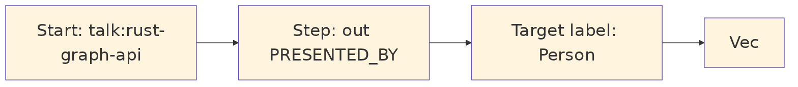

Grust traversal is not Cypher, SQL, GQL, SurrealQL, Spark SQL, or a graph database dialect. It is a small Rust intermediate representation:
let traversal = Traversal::from_node("talk:rust-graph-api")
.out("PRESENTED_BY")
.to("Person")
.limit(10);A traversal has a start expression, a sequence of steps, and an optional limit. The start can be a single node, all nodes with a label, or nodes with a property value. Each step has a direction, an optional edge label, and an optional target node label.

The IR is deliberately modest. That makes it implementable across a
wide range of backends. The memory backend can scan maps. LanceDB can
query tables by hop. pgGraph can lower to SQL over universal graph
tables. Sail can lower to Spark SQL through Spark Connect. Backends that
do not yet support reads can return
GrustError::Unsupported.
This design also protects application code. A caller asks for a graph-shaped operation; the backend decides whether that operation becomes a map scan, a SQL join, a DataFrame query, a Redis graph command, or a future native graph query.
For local analytics and backend planning, grust-core
also exposes GraphIndex. It builds a dense vertex index
from a Graph, validates that every edge endpoint exists,
and stores incoming and outgoing edge indexes per vertex. That gives
adapters and examples one shared adjacency layer instead of rebuilding
node-id maps in each backend. The grust-graph facade
includes a dependency-free benchmarks example that
exercises graph cloning, GraphIndex construction, degree
scans, endpoint scans, and structural edge-key generation over ring,
grid, layered, clustered, Graph500-style R-MAT, and GAP-style R-MAT
graph families.